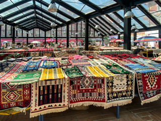

Capitale · Vita quotidiana
Tirana
Tirana introduce il viaggio con i suoi mercati, le botteghe e il movimento della capitale. Una città da scoprire attraverso le cose che succedono ogni giorno, tra bancarelle, incontri e pause nei locali.
Accanto alla vita contemporanea, conserva una memoria del Novecento che aiuta a comprendere il Paese e la sua storia recente.